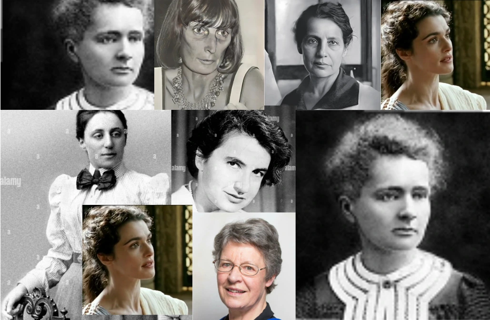

Les récits mettent en scène des figures devenues emblématiques, comme Marie Curie ou Hedy Lavelace, dont la vie et les travaux biographiques, romans et essais, ces histoires révèlent leurs luttes, leurs découvertes et la manière dont la fiction peut réparer l'oubli.
Les récits mettent en scène des figures devenues emblématiques, comme Marie Curie ou Hedy Lavelace, dont la vie et les travaux biographiques, romans et essais, ces histoires révèlent leurs luttes, leurs découvertes et la manière dont la fiction peut réparer l'oubli.
Des oeuvres de fiction, par exemple des romans qui réinventent les parcours d'Ada Lovelace ou l'imaginaire les pensées intimes de Marie Curie, offrent un plongeur sensible dans leur quotidien.


La fiction joue alors un rôle critique : elle questionne les stéréotypes, dénonce l'effet Matilda – ce phénomène d'effacement systématique des femmes – et propose de nouvelles figures d'identification. En donnant la parole à ces chercheuses oubliées, les récits redécouvrent une histoire des sciences, en montrant que les grandes avancées sont le fruit de travaux collectifs où les femmes ont toujours été présentes.
La littérature contemporaine, notamment les romans jeunesse et les fictions scientifiques, multiplient les personnages de jeunes filles passionnées d'informatique ou de biologie. Ces histoires d'auteur·rices d'informatique ou de biologie. Ces histoires d'auteur·rices proposent des modèles positifs de crédibles, qui rendent imaginable une carrière scientifique pour toutes et tou·s. Chaque ouvrage devient un support pédagogique qui sensibilise aux questions d'égalité et de diversité dans les sciences.
La frise "Matilda" illustre de manière chronologique les femmes scientifiques invisibilisées dans l'histoire, cet affichage nomme "effet Matilda" par l'historienne Margaret Rossiter. Cette frise présente une succession de portraits, de la plus ancienne à la plus récente, retraçant en quelques mots la discipline, les champs et la contribution de chaque femme oubliée.
Mathématicienne, pionnière de l'informatique
1815 - 1852
Imagine le potentiel de la machine à calculer et écrit le premier algorithme considéré comme un programme.
Physicienne, co-découvreuse de la fission nucléaire
1878 - 1968
Interprète la fission nucléaire mais est écartée du prix Nobel attribué à son collègue Otto Hahn.
Biophysicienne, cristallographe, structures de l'ADN
1920 - 1958
Réalise des clichés de diffraction des rayons X qui révèlent la double hélice de l'ADN, une découverte nobelisée à son insu.
Mathématicienne, théoricienne des symétries
1884 - 1935
Établit un théorème fondamental sans symétries et lois de conservation, essentiel pour la physique moderne.
Pionnière de l'informatique française
1929 - 2021
Dirige le développement du langage COBOL et contribue aux premiers logiciels français en intelligence artificielle.
Astronome, découvreuse des pulsars
1943 - 2023
Identifie les premiers signaux de pulsars, une découverte noblisée mais attribuée à son directeur de thèse.